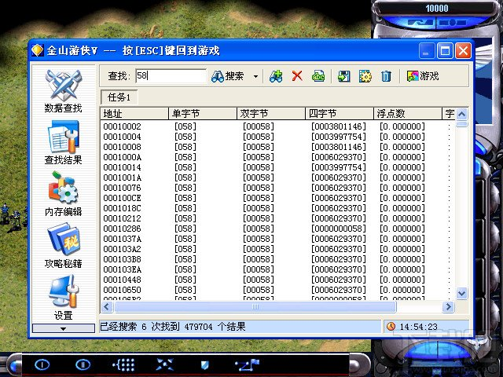

<html>
  <Head>
<meta http-equiv="Content-Type" content="text/html; charset=utf-8">

    
<link rel="stylesheet" href="../static/css/bootstrap.min.css"/>
<link rel="stylesheet" href="../static/css/bootstrap-theme.min.css"/>


    <link rel="stylesheet" href="../static/css/fonts/crmison.css"/>
    <link rel="stylesheet" href="../static/css/fonts/fira_code.css"/>
    <link rel="stylesheet" href="../static/css/fonts/ptsans.css"/>
    <link rel="stylesheet" href="../static/css/katex.min.css"/>
    <link rel="stylesheet" href="../static/css/wiki.css"/>
    <link rel="stylesheet" href="../static/css/codehilite.css"/>

    <script src="../static/js/jquery.min.js"></script>
    <script src="../static/js/bootstrap.bundle.min.js"></script>
    <script src="../static/js/katex.min.js"></script>
    
    

    <title>M5: 内存修改器(memhack)</title>
  </Head>
  <body>
   
   
<nav class="navbar fixed-top navbar-expand-lg navbar-dark bg-dark">
  <a class="navbar-barnd" href="index.html">Yanyan's Wiki</a>
  <div class="collapse navbar-collapse">
    <div class="navbar-nav">
      <a class="nav-item nav-link active" href="OS2020.html">
        
        操作系统 (2020)</a>
      <a class="nav-item nav-link active" href="SysLab2020.html">
        计算机系统综合实验 (2020)</a>
      <a class="nav-item nav-link active" href="ICS_NJU.html"> 加入我们</a>
    </div>
    <form class="form-inline" autocomplete="off">
      <input id="token-input" type="text" oninput="login();" maxlength="16"
        data-toggle="tooltip" data-placement="bottom"
        title="用于确定身份的作业提交 SHA-1 hash digest。更改后回车或刷新网页生效"></input>
    </form>
  </div>
</nav>

<center>
  <div class="article-container">
    <div class="article">
      <h1 id="m5-memhack">M5: 内存修改器(memhack)</h1>
<div class="fenced fenced-red">
<h4 id="_1">截止日期</h4>
<p>5月27日(周日)晚23:59:59。</p>
</div>
<h3 id="_2">收到的作业</h3>
<p><table class="submissions"><tr><td></td><td></td><td></td><td></td><td></td><td></td><td></td></tr></table></p>
<div class="fenced fenced-blue">
<h4 id="_3">概述</h4>
<p>想必大家都对“外挂”很有兴趣。外挂当然也是程序了——它们也是用操作系统提供的API实现出来的。在这个实验里，我们就利用操作系统为我们提供的机制，来实现一个最简单的游戏修改器。</p>
</div>
<h2 id="_4">背景</h2>
<p>一晃回到无知的少年时代……大约2000年左右的时候，PC单机(盗版)单机游戏席卷整个中国大陆，“仙剑奇侠传”、“红色警戒”、“暗黑破坏神”、“星际争霸”……都是家喻户晓的游戏。当然对于格外手残、心智发育尚不健全的中小学生来说，有些游戏的难度实在是太夸张了。仅仅凭借《大众软件》上的游戏攻略当然是不够的，就有了这么一类近乎超神的软件——游戏修改器。</p>
<p><center></center></p>
<p>因为绝大部分游戏都有“钱”这个概念……而钱几乎一定是存储在内存里的——如果我们能找到对应“钱”的内存地址，再把那个内存地址改掉，那不就有花不完的钱了吗？然后我就不停放乾坤一掷就好了啦(逃</p>
<h2 id="_5">实验描述</h2>
<h3 id="_6">总览</h3>
<p><center>memhack <u>PID</u> </center></p>
<p>首先，我们运行游戏程序，然后查找它的pid；之后启动<code>memhack</code>，打开一个交互式的控制台，实现“游戏修改”功能，<code>PID</code>是游戏的进程号。</p>
<p>出于简化，我们只需要修改游戏中的一个变量的值(游戏的分数/钱/...)，我们称之为目标变量。</p>
<h3 id="_7">描述</h3>
<p><code>memhack</code>支持控制台输入以下命令：</p>
<ul>
<li>pause</li>
<li>resume</li>
<li>lookup <code>&lt;number&gt;</code></li>
<li>setup <code>&lt;number&gt;</code></li>
<li>exit</li>
</ul>
<h3 id="_8">解释</h3>
<p>pause和resume用来暂停/恢复程序的执行；lookup <code>&lt;number&gt;</code>查找所有值为<code>&lt;number&gt;</code>的内存的地址；setup <code>&lt;number&gt;</code>设置目标变量的值；exit退出<code>memhack</code>。</p>
<h2 id="_9">实现游戏修改器</h2>
<p>我们以<a href="https://github.com/mevdschee/2048.c/blob/master/2048.c">2048小游戏</a>的分数修改为例。</p>
<p>为了完成外挂，我们需要能够探测和修改目标程序的内存，是不是和gdb的print功能很相似？<code>ptrace</code>是完成这些功能的利器，所以首先我们要学习如何使用<code>ptrace</code>。</p>
<p><code>ptrace</code>可以允许我们控制一个已经在执行的程序，并不需要两者有父子关系，这样我们可以先执行2048小游戏，在任意时刻开启memhack控制它。
如果两个程序没有父子关系，可能你会遇到ptrace执行失败的情况，google一下吧。</p>
<p>pause和resume用来暂停和恢复程序的执行，当我们用pause之后，2048小游戏就不能继续执行，可以想象成被挂起；这时候我们可以通过lookup来查找目标变量。
lookup应该有增量式过滤的功能，例如第一次执行lookup时，找到地址集合{A，B，C}，第二次lookup找到的地址集合{B，C，D}，应该过滤为{B，C}。
通过多次的查找，最终我们只有一个变量地址{C}，这时候可以通过setup来设置地址C的变量的值了。</p>
<p>所以一个memhack流程应该为：重复<code>pause-&gt;lookup-&gt;resume-&gt;玩游戏</code>，过滤到只剩一个目标变量地址，设置变量值。</p>
<p>说明：</p>
<ul>
<li>我们假定了目标变量的地址是不变的；</li>
<li>在lookup内存的时候，我们是逐个字节的查找，目标变量类型可能是int、long long或者其他，在设置值的时候需要考虑变量的字节数和机器的大小端，（为了简单，你可以只设置单个字节）</li>
<li>在读取目标程序的内存前，我们需要了解它使用到了那些内存区域，<code>/proc/[pid]/maps</code>可以告诉我们这些信息</li>
<li><code>/proc/[pid]/mem</code>文件和ptrace调用都可以用来读取程序内存中的特定地址的值</li>
<li>因为安全原因，并不是任意进程的<code>mem</code>文件都是可以任意读写的。</li>
<li>对<code>mem</code>文件的定位可以使用<code>lseek</code>系统调用。</li>
</ul>
<p>然后去愉快地RTFM吧！</p>
<h2 id="_10">作业提交与评分</h2>
<p>在命令行使用<code>git clone https://github.com/NJU-ProjectN/memhack.git</code>将代码下载(将会创建一个名为<code>memhack</code>的目录)，与之前实验相同。配置好<code>STUID</code>和<code>STUNAME</code>之后<code>make submit</code>即可提交——你应该想到把这两个环境变量默认<code>export</code>到你的shell中。</p>
<p>实验要求同之前的mini labs。我们用之前提到的2048小游戏测试你的修改器。</p>
<h2 id="_11">外挂</h2>
<p>游戏修改器在PC普及、游戏走红的时代堪称神器，还内置集成了攻略、机器翻译(那时候机器学习技术还未普及，基本就是dynamic programming实现的字典里模式匹配)等有趣的功能。同时，通用的游戏修改器一般只适合于修改金钱、得分等数据，为了更进一步，互联网(盗版光盘)上还流传了大量的游戏存档修改器、游戏专用外挂(例如锁定生命值)等。</p>
<div class="fenced fenced-green">
<h4 id="_12">锁定生命值</h4>
<p>游戏也是程序。在最简单的情况下，生命值是通过类似对象/结构体来存储的：</p>
<div class="codehilite"><pre><span></span><span class="n">std</span><span class="o">::</span><span class="n">vector</span><span class="o">&lt;</span><span class="n">Player</span><span class="o">&gt;</span> <span class="n">players</span><span class="p">;</span>
<span class="k">class</span> <span class="nc">Player</span> <span class="p">{</span>
  <span class="p">...</span>
  <span class="kt">int</span> <span class="n">hit_point_</span><span class="p">;</span>
  <span class="p">...</span>
<span class="p">}</span>
</pre></div>


<p>因此游戏的binary里，<code>players</code>的地址是静态编译时确定的；而vector的内部实现也是明确的——因此外挂可以针对游戏的特定实现解析出内存中的数据结构，从而实现锁血/锁钱(定期设置数值)、无敌(设置断点; 把条件判断patch成无条件判断)等功能。对游戏进行逆向工程是个不折不扣的黑客活。</p>
</div>
    </div>
  </div>
</center>

<div class="footer-bottom">
  <center>
    <div class="copyright"> © 2020 Yanyan Jiang, All rights reserved </div>
  </center>
</div>


    <script>
      $(function () {
        $('[data-toggle="tooltip"]').tooltip()
      })

      $("math").each(function() {
        var tex = $(this).text();
        var html = katex.renderToString(tex, {
          displayMode: $(this).attr('class') == 'block-math',
          throwOnError: false
        });
        $(this).replaceWith(html);
      });

      function get_token() {
        var match = document.cookie.match(new RegExp('(^| )token=([^;]+)'));
        if (match) return match[2];
        else return "";
      }

      var token = get_token();
      var hint = "token", box = $("#token-input");

      if (token == "") { box.val(hint); }
      else { box.val(token); }

      function login() {
        var token = box.val()
        document.cookie = 'token=' + token + '; expires=Fri, 31 Dec 9999 23:59:59 GMT;';
        if (token == '') {
          box.val(hint);
        }
      }
    </script>
  </body>
</html>